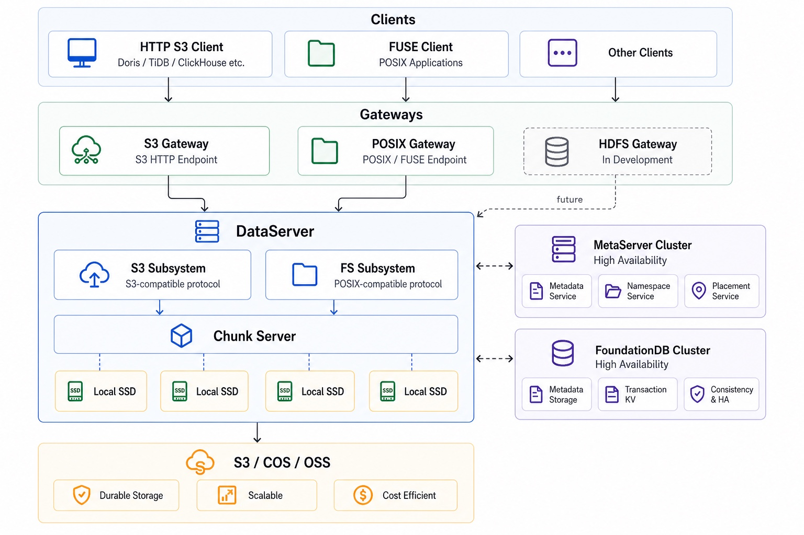

KyteStore 技术白皮书
KyteStore 是面向湖仓系统和 AI 训推场景的透明加速存储底座。它在统一的 ChunkServer 数据层之上提供 S3 兼容对象协议和 POSIX 文件语义，让用户可以在不重写业务系统的前提下，把热数据留在本地高速介质，把远端 S3/COS/OSS 作为容量层和回源层。
1. 概览
解决的问题
湖仓引擎、分析数据库、AI 训练任务和推理服务经常同时访问远端对象存储。直接访问 S3/COS/OSS 的优势是容量弹性和低运维成本，但在高频小对象、热数据反复读取、checkpoint 写入、数据集扫描等场景中，远端访问会带来延迟、带宽成本和吞吐抖动。
KyteStore 在业务系统和远端对象存储之间增加一层本地分布式加速层。用户仍然使用熟悉的 S3 Endpoint 或文件路径，底层由 KyteStore 负责路由、本地缓存、写缓冲、多副本保护、异步回刷和故障恢复。

典型场景
湖仓查询加速
ClickHouse、Doris、DuckDB、StarRocks 等系统可以把 KyteStore 当作 S3 Endpoint，降低热点对象读取延迟，并减少远端对象存储带宽消耗。
AI 数据集访问
训练和推理任务可以通过 POSIX/FUSE 语义读取数据集、模型文件和中间结果，让已有脚本保留路径访问方式。
写入与 checkpoint
高频写入先落到本地 Write Buffer，用户可以写后即读，后台再异步同步到远端对象存储。
能力地图
| 能力 | 用户价值 | 核心机制 |
|---|---|---|
| S3 兼容对象访问 | 替换远端对象存储 Endpoint，不改变湖仓和分析系统接入方式。 | FE S3GatewayService + KyteS3SDK + DS S3SubSystem。 |
| POSIX 文件语义 | 让 AI 程序通过路径、目录、文件句柄和 rename 语义访问存储。 | PosixGatewayService + DS FSSubsystem 元数据分片。 |
| 本地读缓存 | 把热点对象切片落到本地 SSD，降低重复读取延迟。 | Read Cache Namespace、LocalMetaKV、ChunkSubSystem。 |
| 写缓冲加速 | 写入先提交到本地多副本，后台异步刷回 S3，支持写后即读。 | Write Buffer Namespace、ObjectMetaIndex、BufferedObjectSyncManager。 |
| 多副本和高可用 | 写入数据不依赖单个节点，异常时可恢复和迁移。 | Chunk 多副本、Primary/Secondary 写入复制、Slot Recovery。 |
2. 整体架构

ChunkServer
在大规模分布式存储系统中，ChunkServer 通常承担统一数据底座的角色：上层系统维护对象、文件、目录或表分片的元数据，底层 ChunkServer 负责把真实数据追加写入较大的连续数据单元，并处理本地磁盘布局、副本复制、seal、repair 和容量回收。这样做的价值是把协议语义和物理数据管理解耦，上层可以快速演进，底层则稳定优化吞吐、延迟和可靠性。
业内很多系统都有类似分层。以 ByteStore、Azure Storage 这类架构为例，上层负责对象索引、分区路由或 namespace 管理，底层存储层把数据聚合为 chunk / extent 一类的复制单元；Azure Storage 公开论文中的 Stream Layer 使用 Stream Manager 与 Extent Node 管理 extent，extent 是复制、seal 与后台修复的重要单位。KyteStore 借鉴的是这种“上层语义轻量化、底层数据单元统一化”的工程思路，而不是为每一种协议重复实现一套存储引擎。
小对象与小文件聚合
KyteStore 不把每个小对象或小文件直接映射成独立磁盘文件，而是把对象 part、文件 extent 或缓存 slice append 到 Chunk 中。上层元数据记录 key / inode 到 chunk_id、offset、length 的映射，本地盘看到的是更大、更顺序的写入单元。
多副本转发
MetaServer 为 Chunk 选择 Primary 和 Secondary 副本。前台写入先进入 Primary，Primary 在本地 append 后按同一 offset 转发给 Secondary；ChunkInfo 记录 server_ids 和目标副本数，repair worker 后续补齐缺失副本。
这也是 KyteStore 支持多协议的关键。S3 Subsystem、FS Subsystem 以及后续 HDFS/NFS/SDK 接入层只需要处理各自的命名空间、权限、元数据和语义差异；真正的数据写入、读缓存、写缓存、多副本、seal、repair、GC 和冷热分离都复用同一套 ChunkServer。新的上层系统接入时，不需要重新设计底层可靠写入和本地盘管理，只需要把自身语义映射到统一的 chunk 数据模型。
核心角色
| 角色 | 职责 | 用户侧影响 |
|---|---|---|
| FE | S3 HTTP 网关、未来 POSIX/FUSE 网关、启动 readiness、请求路由入口。 | 提供稳定 Endpoint，屏蔽 DS 拓扑变化。 |
| MetaServer | 持久化全局元数据，管理 DataServer、ChunkGroup、S3 Namespace、Slot Topology 和 FS owner epoch。 | 提供一致的控制面，不进入普通对象读写热路径。 |
| DataServer | 实际数据读写、对象读缓存、写缓冲、文件元数据服务、本地 Chunk 管理。 | 承载吞吐和延迟，随着节点数横向扩展。 |
| Remote S3 | 容量层、回源层和最终对象存储后端。 | 保留云对象存储的容量弹性和跨系统可访问性。 |
存储模式
3. 对象加速
S3 网关
FE 的 S3GatewayService 提供 Path-style S3 HTTP 入口，解析 HTTP Method、URI、bucket、object key、Range、分页参数和请求级凭证。FE 不再在对象 API 热路径直连后端 S3，而是统一通过 KyteS3SDK 转发到 DS，由 DS 负责 read-through、write-buffer、LIST merge、delete propagation 和 cache invalidation。
后端凭证可以来自 FE 固定配置，也可以通过 x-kyte-s3-* 请求 Header 传入，便于一个 KyteStore Endpoint 代理不同云厂商或不同 bucket 的后端身份。
读缓存路径
读缓存的核心是切片和去重。SDK 将大对象范围读切成多个 slice，按 slot 路由到对应 DS。DS 先查本地 CacheIndex；缓存未命中时通过 CacheLoadTaskShard 避免同一范围被多个请求重复回源。
写加速 Write Buffer
写路径使用独立的 Write Buffer Namespace。PutObject 和 Multipart Upload 的数据先写入 DS 本地 Chunk，并由 ChunkSubSystem 执行多副本同步；对象被 Seal 后立即对后续 GET/HEAD/LIST 可见，后台 S3 sync 再把数据上传到远端对象存储。
S3 API 覆盖
| API | 状态 | 说明 |
|---|---|---|
| GetObject / Range GET | 已实现 | 支持整对象和 Range 读取，显式 offset-range 不要求先 HEAD。 |
| PutObject | 已实现 / 持续增强 | read_write 与 local_only 写入 Write Buffer；read_cache 模式可代理远端直写。 |
| HeadObject / ListObjectsV2 | 已实现 | 合并本地 write-buffer 和远端对象视图，返回对象元信息和分页列表。 |
| DeleteObject / DeleteObjects | 已实现 | 支持 tombstone、read-cache invalidation 和远端删除传播。 |
| Multipart Upload | 已实现 / 持续增强 | UploadPart 映射为 AppendObject，CompleteMultipartUpload 映射为 SealObject。 |
4. 文件加速
POSIX 语义定位
FSSubsystem 面向 AI / 大模型工作负载，不试图在第一阶段覆盖完整通用文件系统语义。优先级最高的是 dataset 读取、checkpoint 顺序写、临时文件 close 后 rename 发布、目录遍历、小文件 metadata 批处理和 close-to-open 可见性。
kyte-fuse 或 FS SDK 运行在客户端机器上；FE 提供 PosixGatewayService，负责鉴权、mount session、拓扑发现和兼容入口；长期高性能路径可以通过 FS SDK 缓存拓扑后直连 DS。
元数据模型
文件元数据不放在 MetaServer/FDB 的普通热路径里。MS/FDB 负责 FS binding、bucket owner map、epoch、checkpoint pointer 和 inode range allocation；dentry、inode attr、extent map 由 DS FSSubsystem 的 inode bucket owner 负责。
这种设计避免每次 create/open/list 都访问 MS/FDB，让 metadata 热路径可以随 DS inode bucket 横向扩展。MS/FDB 仍然作为控制面存在，保证 owner fencing、checkpoint 定位和迁移恢复。
FS API
| 接口组 | 代表 RPC | 语义 |
|---|---|---|
| 生命周期与探测 | Probe | 查询 DS FSSubsystem 是否初始化、启动以及当前 FsStorageBinding。 |
| 目录与文件元数据 | Mkdir, CreateFile, Lookup, GetAttr, Readdir, Unlink, Rmdir | 以 inode 和 parent/name 形式操作目录项和 inode 属性。 |
| 路径兼容接口 | LookupPath, MkdirPath, CreateFilePath, ReaddirPath, UnlinkPath, RmdirPath | 提供面向网关和调试的路径级操作，内部仍会落到 inode/bucket 路由。 |
| 布局与恢复 | GetDirectoryLayout, MaterializeDentryBucket, RecoverInodeBucket | 管理目录 bucket、虚拟到物理 bucket 映射和 inode bucket 恢复。 |
5. 一致性与高可用
Slot 映射与拓扑 Fence
S3 Namespace 被划分为固定数量的 slot。SDK 按 object key 计算 slot，并根据 MetaServer 提供的 namespace topology 找到 owner DS。请求携带 slot_id 和 topo_version，DS 用本地缓存的 topology 校验请求是否路由到了正确 owner。
恢复与维护
KyteStore 的恢复机制围绕 owner、manifest、sealed object metadata 和本地 MetaKV 状态构建。DS 可上报 LocalMetaKV 状态，MetaServer 提供 sealed manifest 和 candidate chunk 查询，维护接口支持进入用户 IO 维护模式、查看 slot recovery 状态、诊断对象范围和必要时 force reset failed slot。
可见性语义
| 场景 | 语义 | 实现要点 |
|---|---|---|
| 对象写后即读 | PutObject 或 SealObject 成功后，GET/HEAD/LIST 优先读取 write-buffer 当前版本。 | ObjectMetaIndex、generation、read-cache invalidation。 |
| 对象缓存失效 | 写入、删除、完成 MPU 改变可见版本后，失效 read-cache 旧切片。 | DS 内部 ReadCacheInvalidator，必要时跨 DS 调用 InvalidateObjectCache。 |
| 文件 close-to-open | 写入对其他客户端的可见点优先定义在 Flush/Fsync/Release 或同目录 Rename 后。 | FS metadata WAL、extent commit、rename 原子语义。 |
6. API 与运维
管理与诊断接口
控制面通过 MetaServer 管理 namespace、slot migration、capacity、usage、manifest recovery 和 route resolve；数据面通过 DS admin service、S3SubSystem admin service 和 FSSubsystem service 暴露健康、使用量、维护、诊断和文件元数据接口。
| 接口族 | 代表能力 | 使用场景 |
|---|---|---|
| MetaServer S3 Admin | Create/List/Delete Namespace、SlotMigrate、ResolveObjectRoute、ListS3NamespaceSpaceUsage | 创建加速空间、查看容量、迁移 slot、排查对象路由。 |
| S3SubSystem Admin | GetNamespaceUsage、Enter/Leave Maintenance、ListSlotRecoveryStatus、DiagnoseObjectRange | 节点级维护、恢复状态检查、对象范围诊断。 |
| ChunkSubSystem Client | AllocateChunk、AppendChunk、ReadChunk、SealChunk、RepairChunkReplica | 内部数据路径和副本修复，不直接暴露给普通用户。 |
| FSSubsystem Service | Lookup、CreateFile、Readdir、GetDirectoryLayout、RecoverInodeBucket | 文件语义、目录布局、inode bucket 恢复。 |
监控指标
KyteStore 使用 brpc metrics 暴露 MS/DS 指标，并提供 Prometheus + Grafana 方案。MetaServer 还提供 namespace 级空间用量查询，用于控制台和运维脚本展示用户视角容量、逻辑占用、副本因子、chunk 摘要和估算边界。
部署形态
KyteStore 单个二进制可以通过 --start_mode=metaserver 或 --start_mode=dataserver 启动不同角色。最小单机模拟集群适合 PoC、功能验证和 benchmark；生产部署建议拆分 MetaServer、DataServer、本地 SSD、FoundationDB 和监控栈。
7. 性能与调优
对象性能
当前官网首页已经展示对象加速的基础吞吐、基础延迟和 TPCDS 数据。代码侧性能分析进一步显示，64KB GET 的 FE HTTP E2E 延迟可以拆为 FE、SDK、DS local MetaKV、read_chunk 和 response path 等阶段；高并发 PUT 的瓶颈更多受本地盘 64KB direct append 能力影响。
文件性能
文件加速性能将按 metadata 与 data read/write 分开度量。metadata 侧重点包括 Lookup、CreateFile、Readdir、Rename/Unlink 和 inode bucket recovery；data 侧重点包括 dataset 顺序读取、checkpoint 顺序写、close-to-open 可见点和 extent commit。
调优方向
- 对象读路径关注 slice_length、cache hit ratio、LocalMetaKV 延迟、本地 SSD 读延迟和远端 S3 回源耗时。
- 对象写路径关注 write-buffer 副本数、本地盘 O_DIRECT append 能力、chunk soft limit、异步 S3 sync backlog。
- 文件路径关注目录 bucket 数、inode bucket owner 分布、metadata WAL group commit、checkpoint 周期和 list fanout。
- 集群维度关注 slot owner 均衡、topo_version 收敛、DS 维护窗口、missing replica count 和 namespace capacity 水位线。